王道のサンドボックス+サバイバルゲー！ TerraTechをレビュー!
どうも皆さんこんにちは今回レビューするゲームは..!?
サンドボックス×サバイバルの王道ゲー TerraTechをレビューします!

↑画像元:steam
初めまして! nyakorと申します。このゲームはパソコン組んでから初めて遊んだ
ゲームでした。ちなみにおすすめ度は..
★★★★★★★★☆☆ （8 / 10）です!
自分の中では相当いいゲームでした! ではなんでこの評価なのかを説明していきますね！
まずはメニュー画面から
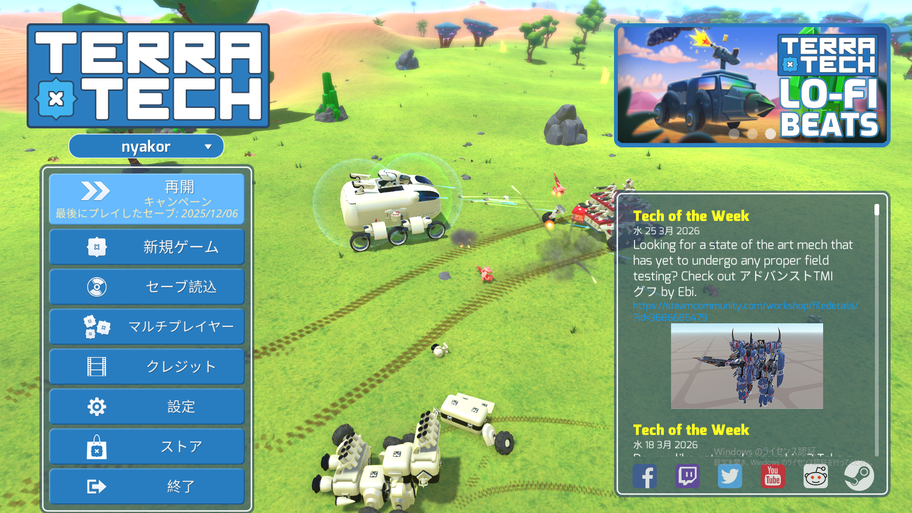
左には設定や新規ゲームを始めるのだったりセーブしたゲームをロードするのもありますね。ちなみにマルチプレイは専用サーバーを立てなくてもいいのですが残念ながらクロスプレイはできないそうです。
右にはニュースとかですかね
ゲームの種類は
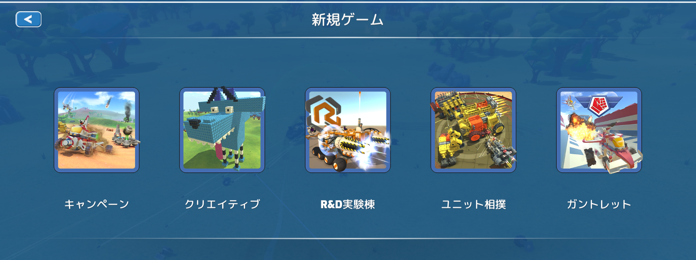
キャンペーンは自分で敵を倒したり資源を回収して進めていくサバイバルモードで
クリエイティブは資源を自由に使っていいモードで自由に作れます。
R&D実験棟はクリエイティブよりも検証しやすい感じです。 自分の火力を測ったりクリエイティブにない開発中の武器なども使えます。
ユニット相撲は円形の中で敵と戦います。先に落ちたり壊れたら負けです。
ガントレットは簡単にいえばレースみたいなもので最速タイムを競ったりできます。
R&D実験棟で遊んでみたことあるんですが、PC版だと無限にアイテム出せるのでアイテム出しすぎるとPCがカックカクになってゲームが落ちます( ´∀｀ )
バイオームなんですが探検が楽しいゲームなので代表的な二つのバイオームのみ紹介します。
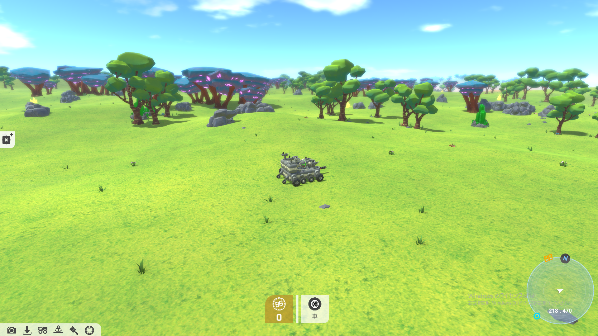
このバイオームはユーザーが最初にスポーンする基本的なバイオームです。
このバイオームはぼこぼこしてなくてなめらかなのでここに拠点を作るといいと思います。↑
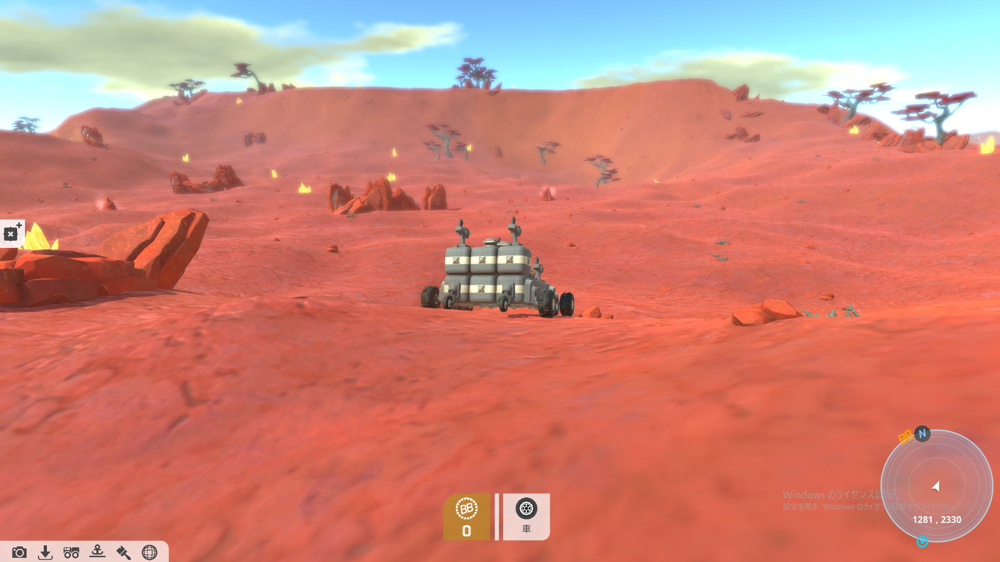
このバイオームは草原と比べると相当傾斜があってぼこぼこしていますよね。草原よりレアで価値がある鉱石が多いのですが序盤の非力なマシンだと厳しいバイオームです。
敵に勝つためにマシンを改造していかないといけないのですが、マシンを改造するのがとても自由なんです。
最初の方は、自分のマシンの見た目より生存が重要です。見た目は「これ車か？」ってくらいのでも序盤はそれで勝てればいいんです。↓(これだと多分まともに戦えません（笑）)

またブロックを買ったり敵のマシンを壊して残骸からつけたりもできます。
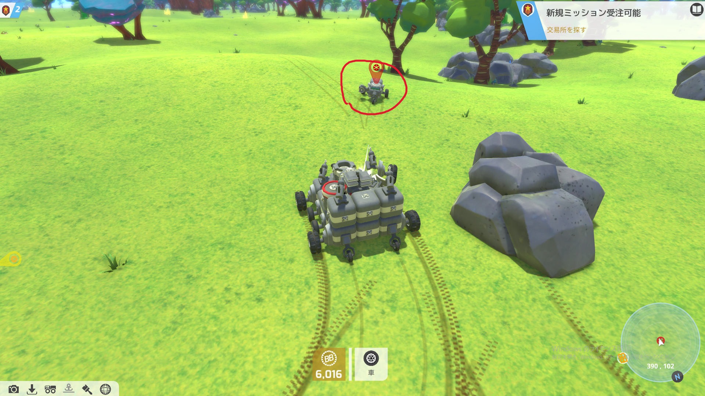
画面の赤いのが敵です(小さくて見ずらいかもです)
敵の敵のマシンの操縦ブロックという脳みそを壊せばマシンがバラバラになります。
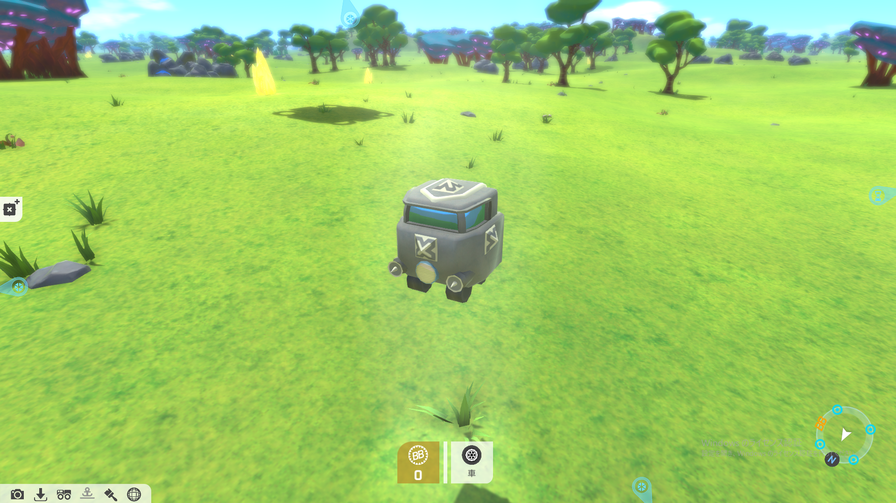
ブロックが散らばりましたね。赤点滅ブロックは耐久値が少ないので注意しましょう。（前やったときに知らなくてすぐ自分のマシン大破したので回復させてからつけましょう。）
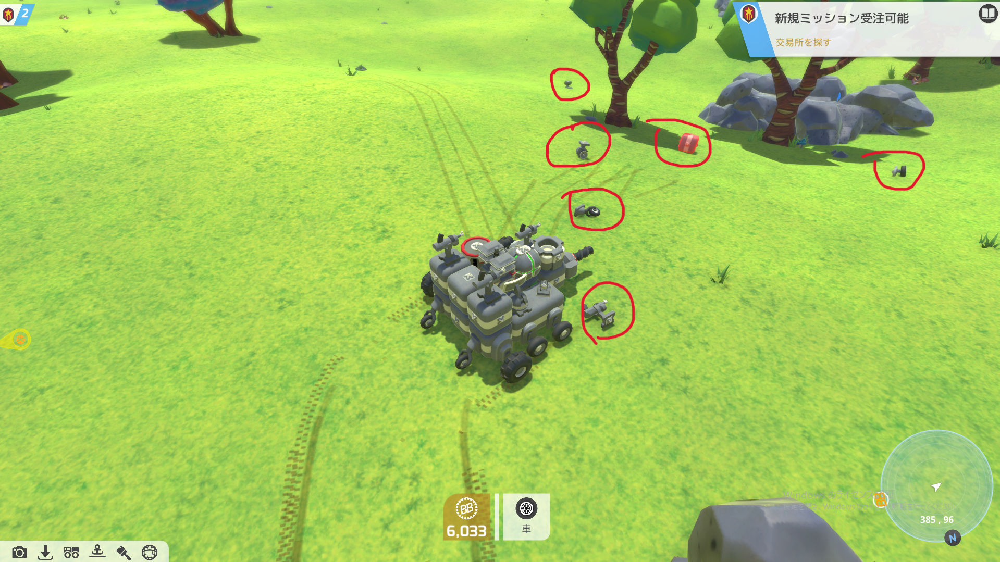
あとはそれを自分のマシンにつけて改造できます。
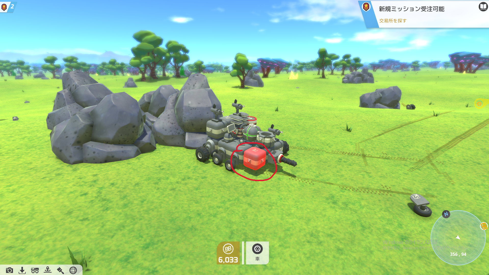
こんな感じでどんどんアップグレードしてクエストだったり冒険に必要なマシンを組み立てて行くってわけです。
たくさんマシンをアップグレードしていくことによりいろいろな機体が組めます。
例えばホバークラフトや飛行機などです。ヘリコプターだったり車や戦車も行けます。
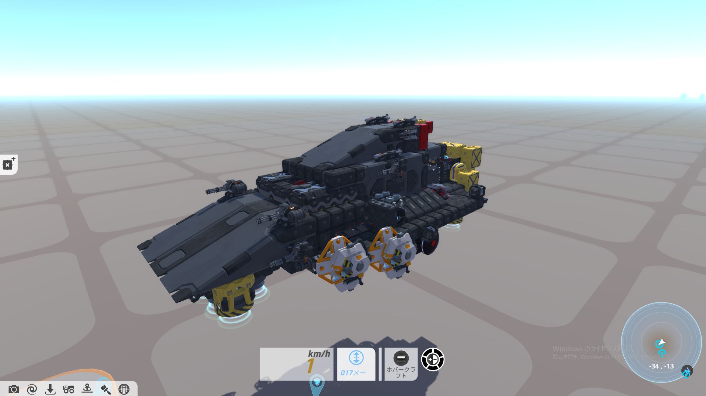
↑軍艦見たいでカッコイイ
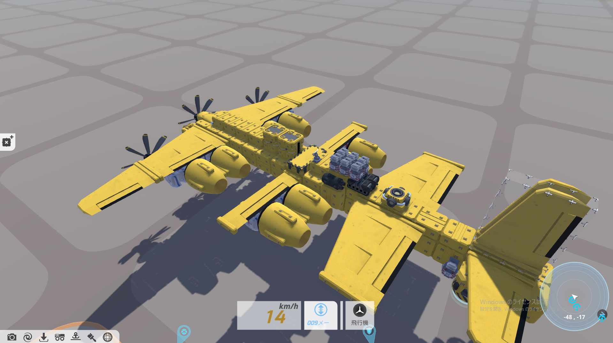
大型飛行機です。空爆もできますしアイテム輸送もできる万能機体です！
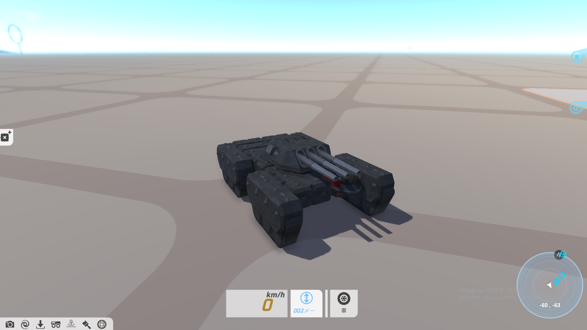
小さい方の戦車です。機動性抜群！で量産も簡単だし機能も多く追加できます。
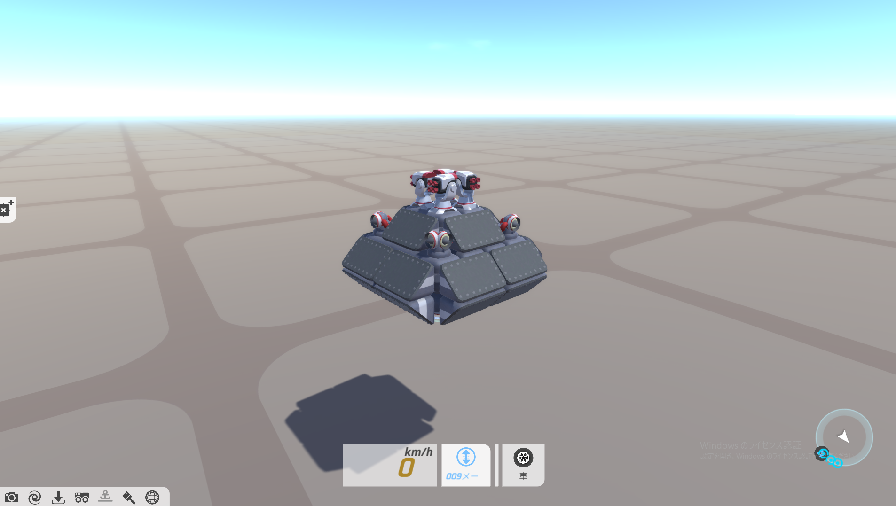
途中でブログに載せたおもろい形してるホバークラフトです。 なんとこれでも戦えます。
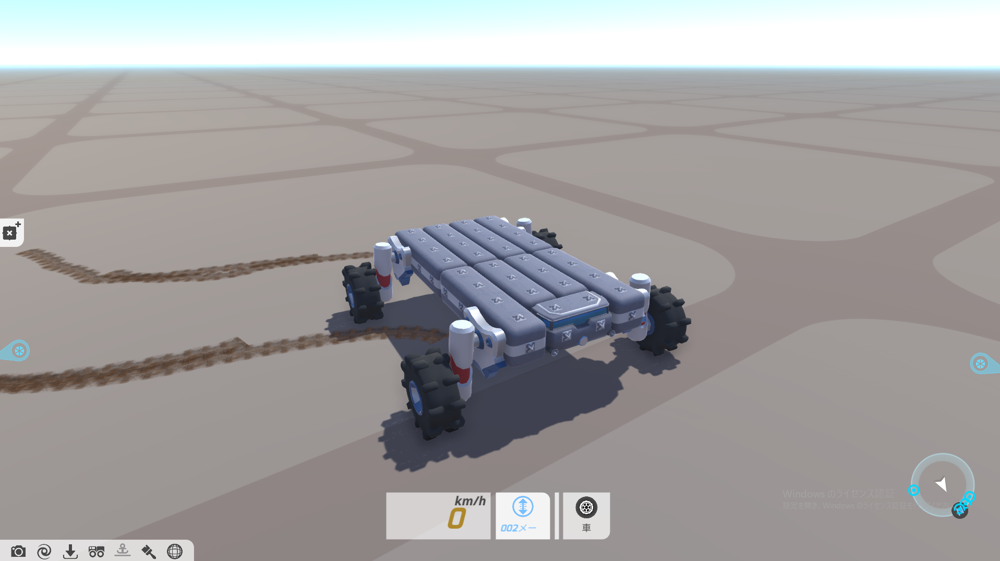
コストが低い軽量機体バギーです。コストが圧倒的に低いので簡単に量産できます。
ということで最後にメリットデメリットでまとめていきます！
いいところ
ブロックずつ改造できる一ので終わりがなく無限に試行錯誤して機体を作れる。
バイオームも豊富でとにかく飽きない。
土地の地形によって機体を改造できるのでやりがいがある。
クエストも数が多くて面白い！また敵の武器をそのまま奪える。
マイナスなところ
アイテムをそのままインベントリに入れれない地面にコレクターというのを置かないと拾えないのがちょっとだけ大変だなと思った。(終盤はあるので序盤だけ)
AIがちょっとだけおバカで岩に引っかかって動けなくなったり変な方向に撃ったりしてしまう時がある。
一番厄介なのはクエストバグ。クエストバグ。クエストバグとは
生成物や建物が生成されなかったりクエストが進行しなくなるというバグでTerraTechはクエストキャンセルできないので完全に詰みます。（僕はこのバグのせいで最後の一つのクエストが終わらなくなって一からやり直すことになりました😢）僕が考えた対策としてはクエスト受注前にセーブすることと早めにクエストは片づけておくことです。
という感じです！どうだったでしょうか？
僕的には有志の人が作ったmodという追加要素もあるらしくまじで無限に遊べるゲームだなと思いました。
2026年 3/30日時点では2570円でした! ちょっと高いかも？
セールだと最大75%offされたことがあるみたいでセールを狙えば相当安く買えますね。
ちなみに新作のTerraTech Worldsというゲームも新しく出たみたいなので
ぜひ前作のTerraTechも新作のTerraTechも遊んで見てください! 下にリンク張っときますね！
初めての記事でしたが見てくれてありがとうございました。
ほかにも記事あるのでホームから見てみてください！よい一日を！
TerraTech Worlds (新作のSteamページ)
ホームに戻る